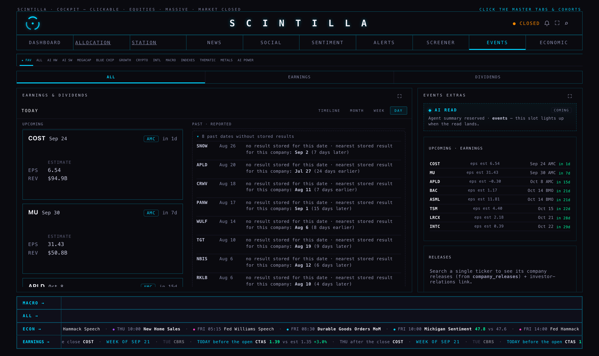
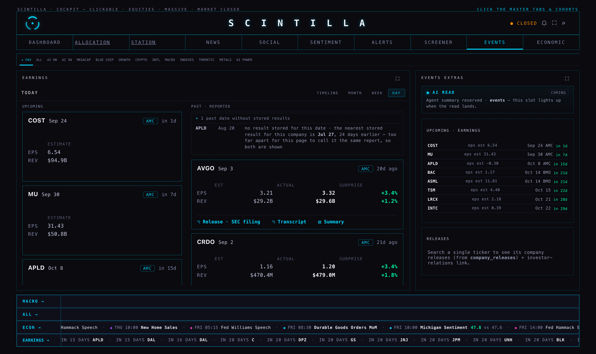
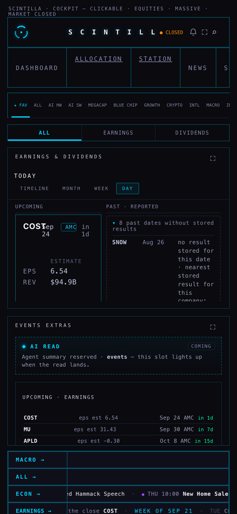
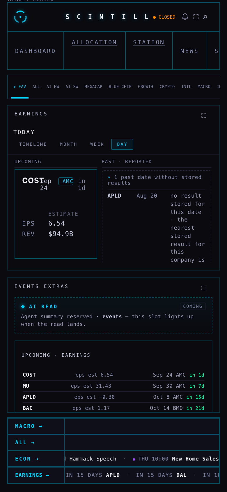

Lane M34 · 23 September 2026 · Hub branch hub/earnings-data-20260923.
Written for Alan. Nothing here is deployed, and nothing has been deleted from the database.
Alan, 7:30 PM: “It says eight past dates without stored results. What's up with that?”
It was one fault with a simple cause. A company's report date is the row's name. The table stores an earnings event under the pair (company, date), so the date is part of its identity. When the supplier moves a projected date — and they move constantly — the job that writes the calendar cannot change the name of the old row. It writes a new row on the new date, and the old one stays behind for ever. The company never reported on that old day, so a result never arrives for it, and the page had to call it exactly what it saw: a past date with no stored result.
This is not a guess about the code. The writer says so itself, in its own comment:
// Identity in this table is (ticker,date), so when the provider moves a projected report date the
// upsert above creates a NEW row and the old one stays (MU 09-22/09-30, NKE 09-29/10-01 ...)
— fmp-events, the deployed function, pulled with the Supabase CLI tonight.
earnings-capture writes the same way. earnings-date-verify does move a date when a
company's own press release states one, but only for the next ten days, and its move collides with the
(company, date) name whenever a row already sits on the new date — so it can never tidy these up.
Your events room was on ★ FAV, your 60 favourites. Those eight dates were:
| Company | The date with no result | What actually happened |
|---|---|---|
| SNOW | 26 Aug | reported 2 Sep · 7 days later |
| CRWV | 18 Aug | reported 11 Aug · 7 days earlier |
| PANW | 17 Aug | reported 1 Sep · 15 days later |
| WULF | 14 Aug | reported 5 Aug · 9 days earlier |
| TGT | 10 Aug | reported 19 Aug · 9 days later |
| NBIS | 6 Aug | reported 12 Aug · 6 days later |
| RKLB | 6 Aug | reported 10 Aug · 4 days later |
| APLD | 20 Aug | its nearest stored result is 27 July — 24 days apart, so this one is NOT called a moved date. It stays on the list, now with that sentence beside it. |
Across every name the Hub tracks, not just your favourites, there were 27 such dates since 1 June, and 12 more pairs where the same result is stored twice on two different days (AVGO 2 and 3 Sep, DELL 1 and 3 Sep, CRWD 26 Aug and 1 Sep …).
A stale date is not wrong data — it is a date that stopped being the report date. So it is marked, not removed. The migration adds three empty columns to the earnings table: when a date was retired, which date it gave way to, and why, in plain words. Every row keeps every value it has. Deleting rows would need your say-so; this does not, and it is reversible in two lines (they are written at the bottom of the migration file).
The backfill only writes where the database itself holds the evidence. Three rules, and nothing else:
| Rule | The evidence | How many |
|---|---|---|
| A · the moved date | the date has no result, and the same company has a stored result within 21 days. A quarter is about 90 days, so a report three weeks away is the same report moved — not the next one. | 25 rows |
| B · the same result twice | two dates carry identical figures within 7 days, and exactly one of them is the day the company's earnings call is stored against. The call is the evidence. | 12 rows — it settles all 12 |
| C · two dates still ahead | neither has a result yet, and exactly one of them carries a time from Nasdaq's own calendar, which states the date. The other is the older guess. | 13 rows of 21 pairs |
| everything else | — | left alone and listed for a person |
21 days, not 45, is deliberate: it leaves the far-apart cases (APLD, CBRS) to a human instead of guessing them away. The eight future pairs rule C cannot settle — PGR, TXN, NOW, GOOGL, BRK-B, HIMS, AU, CEG — are all in late October or November, and they settle themselves the moment one of the dates receives a result.

b6913cb). The sub-tab strip ALL | EARNINGS | DIVIDENDS sits at the top, the panel calls itself
“earnings & dividends”, and the past column opens with “8 past dates without stored results”.
| The past column | Before | After |
|---|---|---|
| on ★ FAV (what you were looking at) | 8 dates without results | 1 — APLD, with its reason |
| across every tracked name | 27 dates without results | 2 — APLD and CBRS, each with its reason |
| reported cards on ★ FAV | 44 | 44 — no report was hidden |
This one is not a fault, and I want to be straight about it rather than “fix” something that is right. The events room was scoped to ★ FAV. Kroger (11 Sep), Adobe and Oracle (both 10 Sep) and UiPath (3 Sep) are all stored, complete and correctly ordered — they are simply not in your 60 favourites. I read the page's own memory in the browser to be sure: the rows it holds begin CTAS 23 Sep, CBRS 22 Sep, KR 11 Sep, ADBE 10 Sep, ORCL 10 Sep — and the favourites filter is what removes the last three before they are drawn. Press ALL and the column opens with CTAS 23 Sep, KR 11 Sep, ADBE 10 Sep, ORCL 10 Sep.
So: the dates were broken, the ordering was not. If you would rather the column never hid a recent report, the honest change is a line above it saying “★ FAV · 4 more reports outside your favourites” — that is a decision for you, below.
Alan: “As a report comes nearer, we should apply a similar idea to the economic section — as it gets closer, it displays more detail: before market open, after market close… more like this timeline: how many days, what company… more natural.”
The band used to say one thing at one size for everything in the week: the weekday, the ticker, and the result when it had one. It now carries the next three weeks as well, and the nearer a report is, the more it says.
| How near | What the item says | Why |
|---|---|---|
| a week or more out | IN 12 DAYS · NKE | how long, and who. Nothing else — it is not news yet. |
| inside this week | TUE · NKE | the day it lands on. |
| tomorrow | TOMORROW after the close · COST · est 6.54 | now the session and the number to beat matter. |
| today | TODAY before the open · CTAS · est 1.35, and the item breathes | the same slow pulse the economic nudge uses for “soon”. |
| reported | CTAS · 1.39 vs est 1.35 · +3.0% in green | unchanged: the result, in the calendar's own three colours. |
A report time arrives long after the date does. When one is stored, the row is stamped with where it came from
and when — that stamp already exists (report_time_source, report_time_set_at; 44 rows
carry “nasdaq-calendar” as of tonight). For one day after that stamp, and only for reports inside the
coming week, the band adds a quiet time announced mark. Then it goes silent again. In the picture above,
only Costco wears it.
I tightened this after looking at the first screenshot: the night the Nasdaq fill lands, twenty items three weeks out all wore the mark at once, which is noise rather than news.
Alan: “The dividend section, we've never really used it… kind of weird to have.”
Gone. The ALL | EARNINGS | DIVIDENDS strip is removed from the events room, the panel now calls itself earnings, and the empty “no dividends source wired yet” view went with it. Nothing else in the room moved: the span bar (TIMELINE · MONTH · WEEK · DAY), the cards, the extras column and the calendar are untouched — lane M28 is working on that layout tonight and I stayed out of it.


earnings_events in the live database, read tonight, read-only. No number here was typed by hand.earnings_call_transcripts (the day the company's call is stored against); rule C uses report_time_source = 'nasdaq-calendar'.fmp-events, earnings-capture, earnings-sweep and earnings-date-verify, pulled with the Supabase CLI.| # | The decision | What I would do |
|---|---|---|
| 1 | How the stale rows stop coming back. Either the two rules run as a small scheduled job every ten minutes (no function is touched, it is the same SQL), or the writers are changed to stamp the old row when they insert a moved date. | Schedule the SQL. It is additive, reversible and needs no deploy; changing the writers can follow once it has been watched for a week. |
| 2 | Whether ★ FAV should say when it is hiding recent reports (Kroger, Adobe, Oracle were all outside your favourites tonight). | Yes — one quiet line above the column: “4 more reports outside your favourites”. It is honest and costs nothing. |
| 3 | The band carries three weeks now. That is 25–30 names on a busy week. | Leave it for a week and see. If it feels long, the economic nudge's answer is the one to copy: collapse a loaded day into a count rather than naming everyone. |
Branch hub/earnings-data-20260923, from origin/hub/release-20260923 @ b6913cb.
Tests: 467 run, 465 pass; the two failures are the two that already fail on production. 9 of those tests are new and cover the rules on this page.